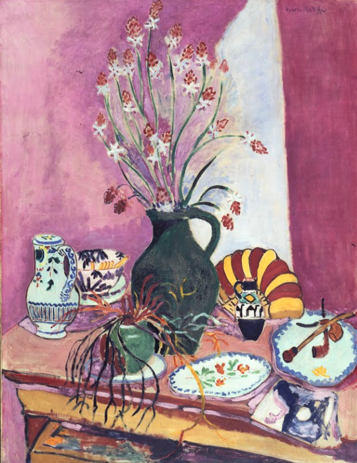

作品名 「Nature morte aux asphodèles」
花言葉 「私は君のもの」「生涯信じます」「慎ましさ」「わが後悔は死ぬまで汝につきまとうであろう」
アスフォデルス
「私は君のもの」
花名の Asphodel はギリシャ語で火山灰の意味「A spodos」と谷の意味「edos」という言葉が語源になっている。ギリシャ語で「天国に咲く花」、ギリシャ神話では「不死の花」とされている。地下茎を持ち、よく増えることから決して枯れる（萎む）事のない花とされたのが由来。
Nature morte aux asphodèles
アンリ・マティス
アンリ・マティスは、フランスの画家。フォーヴィスム（野獣派）のリーダー的存在であり、野獣派の活動が短期間で終わった後も20世紀を代表する芸術家の一人として活動を続けた。自然をこよなく愛し「色彩の魔術師」と謳われ、緑あふれる世界を描き続けた画家であった。
| 作品名 | Nature morte aux asphodèles |
| 作者 | アンリ・マティス |
| 制作年 | 1907年 |
| 種類 | キャンバス・油彩 |
| 寸法 | 89cm × 116.5 cm |
| 所蔵 | 1907年にハーゲンのフォルクヴァング美術館に収蔵され、1922年からエッセンの美術館に収蔵 |